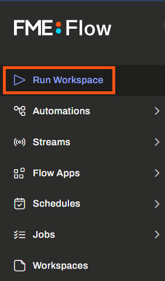
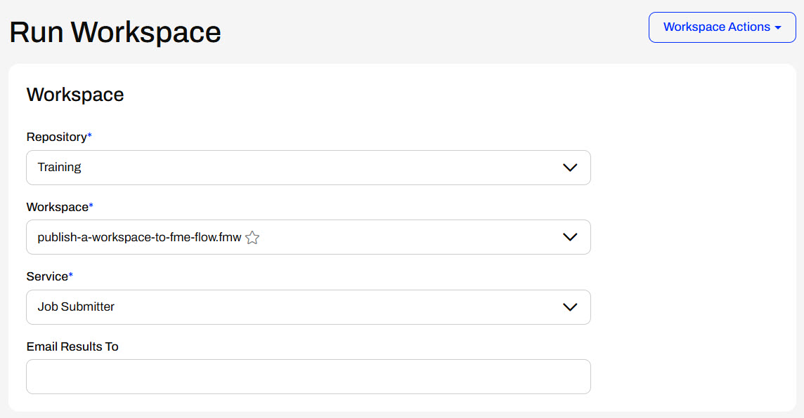
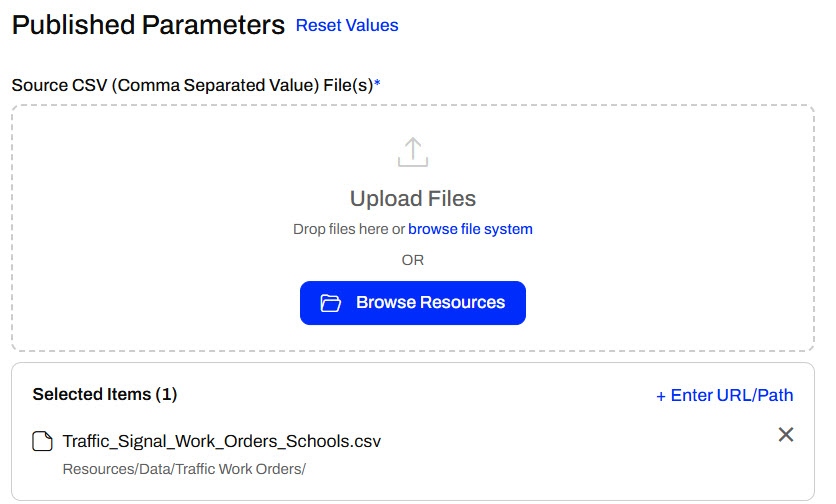
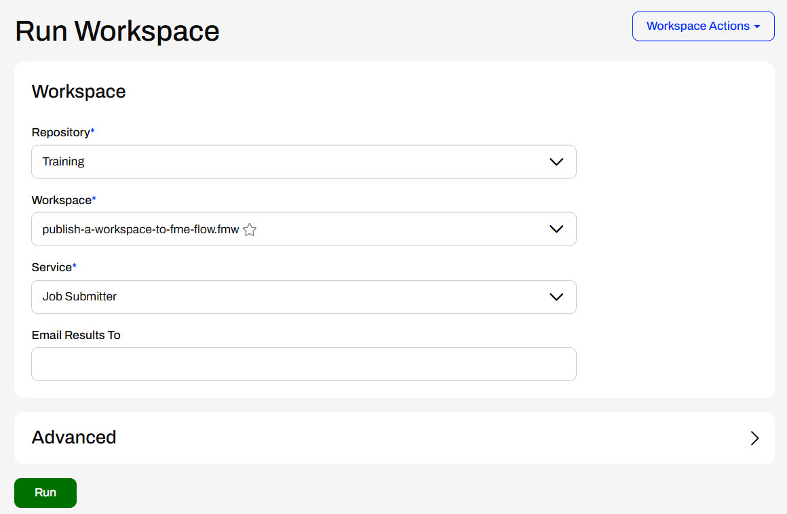
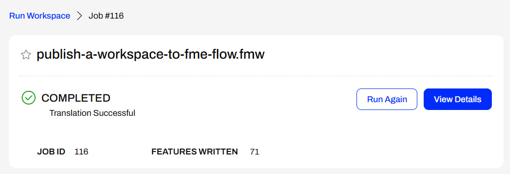

You can also browse for workspaces from the Workspaces page. Simply select the repository and click on a workspace name to open it to Run Workspace.
After completing this lesson, you’ll be able to:
The easiest way to run a workspace on FME Flow is through the Run Workspace page. We call each submission to run a workspace a "job."

You can also browse for workspaces from the Workspaces page. Simply select the repository and click on a workspace name to open it to Run Workspace.
On the Run Workspace page, you choose the repository, workspace, and service to run as a job.

The Run Workspace page has an Email Results To parameter. To sucessfully send an email containing the job results, you must configure each of the email subscriptions under Automations > Notifications (Classic) > Subscriptions. It requires you to input your SMTP account details following these instructions for each subscription.
If your workspace contains Published Parameters, the next section on the Run Workspace page allows you to configure the parameter values the workspace will run with. The last section is the Advanced options, which is not required for this course but may be helpful for your future FME Flow workflows. Expand the sections below to learn more.
When you select a workspace containing Published Parameters, you can set those parameters before running the translation.

Published parameters are created in FME Workbench, and you have many options for the type of parameters. Parameters can be a source file to input to the workspace, text values to configure how the workspace runs, an input location to query data by, and more. We will cover parameters in more detail in Build Self-Serve Workflows with Parameters. Creating and Modifying User Parameters and Create Flexible Workspaces with Parameters provide more information for working with parameters in FME Workbench.
The Run Workspace page in FME Flow also has an additional section under Advanced. Advanced parameters are FME Flow-specific parameters that provide advanced control over how the workspace will be run. You do not need to know this content for this lesson or course; however, it may be helpful to understand in your future FME Flow workflows.
Job Queue
Job Queues manage how the core sends FME Flow jobs to specific Engines or to control the priority of job requests. You may select a predefined Queue to which this job should be sent when it is run. Job Queues can be created and edited from the Engine Management page.
Queued Job Expiry Time
This sets the maximum time a job can wait in the queue before being assigned to an engine and run. If a job waits longer than this time in the queue, it will be cancelled and not run. This option is helpful for time-sensitive jobs you do not want to run after exceeding the specified time.
Running Job Expiry Time
This sets the maximum time a job can be in the Running state. When this time is exceeded, the job will be cancelled automatically.
Log Debug
This is an option to provide additional logging for debugging purposes in the job log. It should be used cautiously as it will likely impact job performance and increase the file size of the job log.
Other Ways to Run this Workspace
You can follow the links to create an FME Flow Workspace App or a webhook to run your workspace.
Topics to Notify
This section lists the FME Flow Topics alerted when the job succeeds or fails.
Published Parameters
This section lists the Published Parameters the workspace has and provides the configuration details for each parameter.
Once all parameters are configured to run a workspace, click Run to submit the job request.
Once you click Run, the FME Flow Core sends the job request to the FME Engines. If an engine is available, the job will run immediately. Otherwise, it will queue until an engine finishes another task and becomes free. A process dialog will appear indicating which state the job is in.

Once the translation finishes, the engine communicates with the core, and the dialog indicates whether the job completed successfully or failed.

In the previous exercise, Sven published his workspace to FME Flow. He must run it on FME Flow to ensure it functions as expected. Once he knows it functions correctly on FME Flow, he can let his colleagues know the workspace is on FME Flow, and they can run it.
Follow along with Sven and complete his steps to run the workspace on FME Flow.
Sven navigates to FME Flow and clicks the Run Workspace button on the side menu.
Sven selects the Training repository and the publish-a-workspace-to-fme-flow.fmw workspace. Job Submitter is the only service this workspace uses, so he leaves that value as the default.
Sven's workspace has no published parameters, so that section does not appear for his workspace.
Sven does not need to alter any settings under the Advanced section.

Sven clicks the Run button to submit the job. FME Flow runs the workspace and displays a completed message, the Job ID, and the number of Features Written.

Now, Sven knows the workspace is functioning correctly on FME Flow, and his colleagues may also run it. This ensures they are all using the same workspace and removes the need to manually share the workspace file between multiple people.